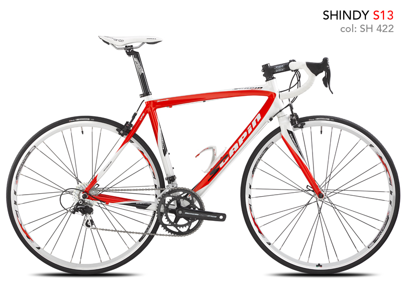

Guarnitura:Fsa Omega(50-34)
Cambio:Campagnolo Veloce
Deragliatore Anteriore:
Comandi:Campagnolo Veloce+
Freni:Scapin T312
Cassetta:Miche
Catena:Miche
Sella:San Marco Ponza Lux
Reggisella:Fsa Gossamer
Piantone:Fsa Afterburner
Piega:FSA Comet
P.Borraccia:Elite Paron Race
Pedali:Look Keo Easy
Cerchi:Miche Reflex
Mozzi:Miche Reflex
Coperture:Michelin Lithion 2 TS